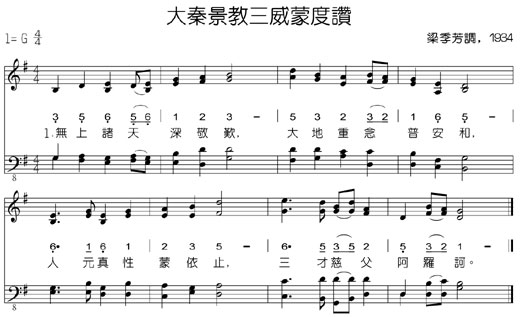
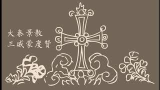
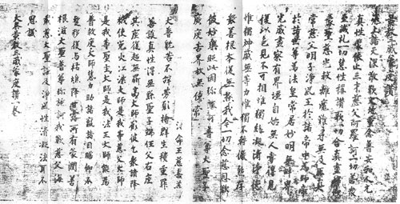
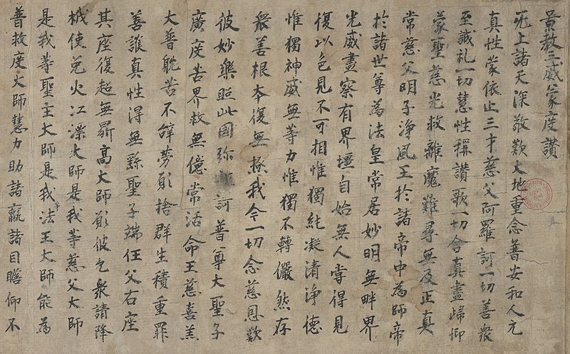
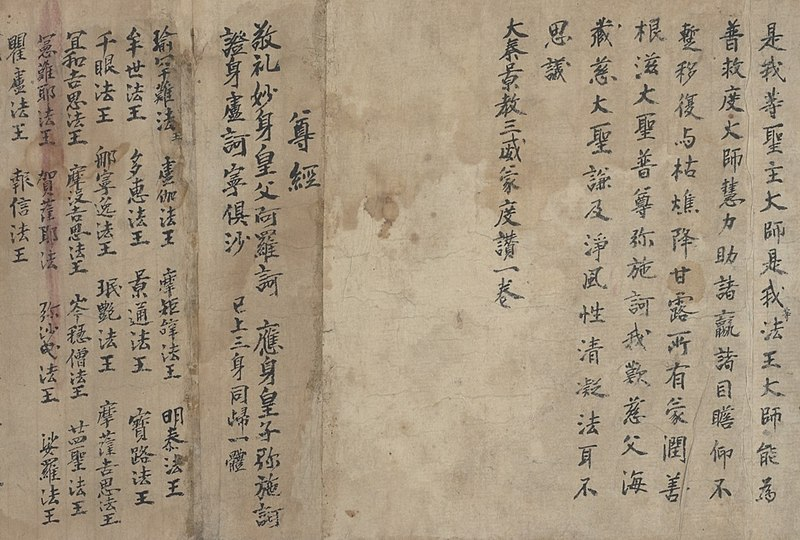
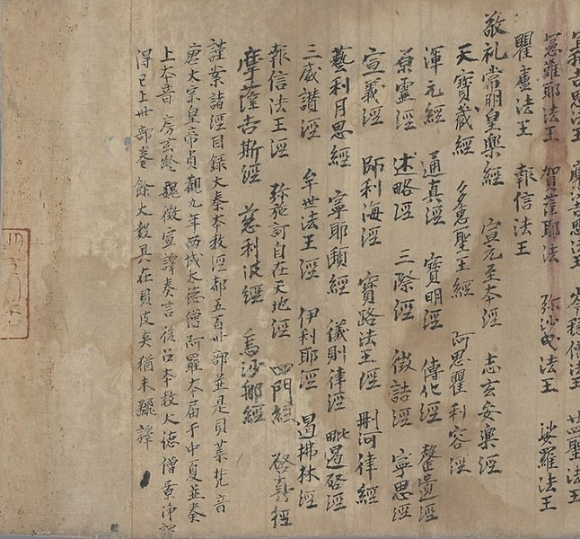
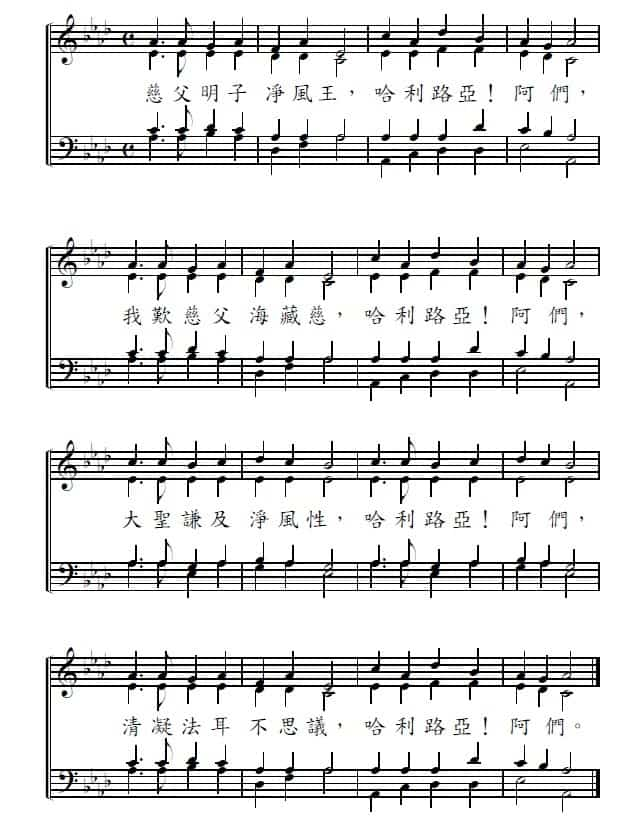
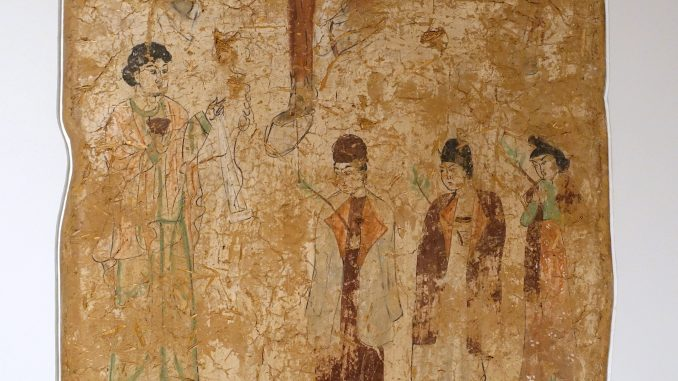
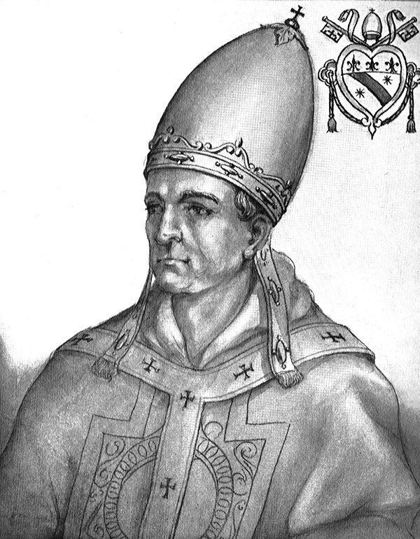

All heav'n worships in great awe, All men long for earth's accord,
Righteous men show true respect, All with wisdom sing Your praise,
You are peerless, constant, true, Father, Son and Spirit, one,
Veil'd on boundless mystery, Search we fully without end,
Only You are purest good, Only You true pow'r possess,
Now we ponder mercy, love, Fill the nations with Your joy,
Ageless King and willing lamb Sharing bitter toil and pain,
Holy Son at Your right hand, From Your throne above the world,
Master, and most gracious Sire, Ruler and good Lord of all,
Lord, provide the meek of strength, Eyes on You be fixed thereto.
Righteous and adored Messiah, Mercies wider than the seas,
旡上諸天深敬歎，大地重念普安和，


李志剛
中國在二十世紀的考古學上是有許多的發現，而且亦有許多的成就。例如二十世紀初葉有河南殷墟甲骨文的發現；敦煌石窟經卷的發現；和闐漢代簡帛的發現等等，使中國考古學帶來嶄新研究的局面。無可置疑，敦煌莫高窟有四百九十二個洞穴，蘊藏的壁畫，雕塑，佛像固然是中國藝術重大的寶庫，但在石室發現的經卷，更涉及中國古代宗教，文化，哲學，文學，歷史，社會，風俗，政治，軍事，法律，醫學，科技，中外文化交流各種領域的記錄，可說是中國寶貴的文化遺產。
敦煌莫高窟經卷的發現，以道士王圓篆於1900年發現千年古卷為最早，其後有匈牙利人斯坦因（Mark Aural Stein,
後入英籍），於1906年被印度英國政府派往中國新疆和甘肅一帶考察尋訪古蹟文物，翌年三月十二日抵達敦煌，在莫高窟誘勸王圓篆道士。其後運走經卷二十四箱；古畫和藝術品五箱，由是引發外國考古學家對敦煌石窟文物的垂涎。以至1908年斯氏又聯同法國漢學家伯希和（Paul
Pelliot）同到敦煌考察，可謂各有所穫。搜去遺書六千多卷，遺畫二百一十六件。伯希和特為洞穴作出編號，在莫高窟各洞穴拍攝數百幅照片，刊印出版六大冊。自此引起中國學者對敦煌莫高窟文物的重視，請求滿清政府護寶，於是交由學部進行將殘餘經卷悉數運返北京。事實上，其後俄國，日本，德國，美國，丹麥，朝鮮，印度，瑞典，奧地利等國均有學者到敦煌去搜藏，其中以俄羅斯數量最多，經卷已達一萬八千九百號；英國一萬一千號；法國六千六百號。總計全世界現有經卷文書四至五萬號；遺畫一千件；美國哈佛大學剷去的壁畫亦有二萬三千零六平方厘米。在此可見敦煌文物的豐富，“敦煌學”因而興起，成為世界一門重要的學問。
在現存可見的敦煌四萬多的經卷和文書中，屬於漢文的書卷約有三萬六千多號，其中大部分屬於佛教的經卷。但佛經文獻以外的書卷中，竟然發現有唐代景教七個的經卷，亦可說是基督教在唐代傳教遺留的重要文物。敦煌石室所藏的景教的經卷有：
1. 一神論 序聽迷詩所經 志玄安樂經 大秦景教宣元至本經 大秦景教三威蒙度讚 尊經 大秦景教大聖通真釋法讚
據大秦景教三威蒙度讚 ，應是唐代景教的一首聖詩，亦是基督教在中國最古老的一首聖詩，是伯希和於1908年在敦煌石室發現的經卷，現藏巴黎國立圖書館。按石室經卷所載：
無上諸天深敬歎， 大地重念普安和。

這應是唐代七言古詩，但在第二十三句竟然是“彌施訶普尊大聖子”八個字，顯然與七言詩並不協調。若是重考基督教文藝出版社1977年所出版的普天頌讚 （修訂版）六七九首“大秦景教三威蒙度讚”第六節，“施訶”兩個字是連音，在此反映唐代景教的讚美詩是有連音，不受七言所拘泥，而且該首聖詩是有原來的樂譜，可惜經已不存。
當上海廣學會（即今日基督教文藝出版社）於1936年出版普天頌讚 的時候，是由梁季芳譜調，成為一首可以歌唱的聖詩。唐代景教稱“三威”亦即上帝聖父，聖子，聖靈的三位；“蒙度”就是得蒙救贖之意。所以當第一版普天頌讚 出版的時候，編列為第二首，屬於“崇拜三一上主”一目。
普天頌讚 收錄的
普天頌讚 加上了
“大秦景教三威蒙度讚”在文調上頗為古雅艱深，而在1996年普天頌讚 中英文修訂本，從英文的翻譯中是可以明白讚美詩原文的闡釋的意義。
MIDI播放 ]
無上諸天深敬歎，大地重念普安和，人元真性蒙依止，三才慈父阿羅訶。
一切善眾至誠禮；一切慧性稱讚歌；一切含真盡歸仰；蒙聖慈光救離魔。
難尋無及正真常，慈父明子淨風王，於諸帝中為帝師，於諸世尊為法皇。
常居妙明無畔界，光威盡察有界疆，自始無人嘗得見，復以色見不可相。
惟獨絕凝清淨德，惟獨神威無等力，惟獨不轉儼然存，眾善根本復無極。
我今一切念慈恩，歎彼妙樂照此國；彌施訶普尊大聖子，廣度苦界救無億。
常活命王慈喜羔，大普耽苦不辭勞，願赦群生積重罪，善護真性得無繇。
聖子端在父右座，其座復超無量高，大師願彼乞眾請，降使免火江漂。
大師是我等慈父，大師是我等聖主，大師是我等法王，大師能為普救度。
大師慧力助諸贏，諸目瞻仰不蹔移；復與枯燋降甘露，所有蒙潤善根滋。
大聖普尊彌施訶，我歎慈父海藏慈，大聖謙及淨風性，清凝法耳不思議。
All heav'n worships in great awe, All men long for earth's accord,
Righteous men show true respect, All with wisdom sing Your praise,
You are peerless, constant, true, Father, Son and Spirit, one,
Veil'd on boundless mystery, Search we fully without end,
Only You are purest good, Only You true pow'r possess,
Now we ponder mercy, love, Fill the nations with Your joy,
Ageless King and willing lamb Sharing bitter toil and pain,
Holy Son at Your right hand, From Your throne above the world,
Master, and most gracious Sire, Ruler and good Lord of all,
Lord, provide the meek of strength, Eyes on You be fixed thereto.
Righteous and adored Messiah, Mercies wider than the seas,
景教三威蒙度讚
《景教三威蒙度讚 》（也稱《大秦景教三威蒙度讚 》；法語：Éloge de la Sainte
Trinité [1] 法國 漢學家 伯希和 在敦煌 鳴沙山 石室發現，以低價購入並帶到巴黎 的景教 寫本。《大秦景教三威蒙度讚》是景教徒敬拜時頌念的《經 》、《讚美經 》；此寫本是唐代 僧人景淨 在760年翻譯635年阿羅本 傳入中國 的景教經文。「三威」指聖父 阿羅訶 、聖子 彌施訶 和聖靈 淨風王三位一體 。
《大秦景教三威蒙度讚》原本現藏法國國家圖書館 ，伯希和目錄3847。此寫卷有英譯本。
該詞亦被中國基督教協會 收入《讚美詩（新編） 》，為第385首。
《景教三威蒙度讚》寫本



該寫本前半部份為《景教三威蒙度讚》，後接《 尊經 》。
作為本式化的崇拜，必須引入稱為「最本色化」的詩歌，大秦景教三威蒙度讚在華文聖詩中，與拉丁聖詩的先祖Veni Creator
Spiritus(聖靈感化歌)齊名，是唐代聶斯脫里(Nestorian)派信徒由敘利亞傳來的榮耀頌。
當中，將耶和華、雅威稱為「慈父、阿羅軻」，耶穌為「明子、耶施訶」，聖靈為「淨風王」。內容很多歌詞是以佛教術語為背景的，所以要了解佛教，才能了解景教。
在敘利亞文本中，本來只有最後的三句為結束的讚美，
景教譯為：
語體文即是：
我節錄了其中兩節的內容，成為一首拜堂禮結束時的三一頌(Doxology)。由於今天已經沒有人歌唱這類型的聖詩，所以在崇拜選曲中必須以簡單曲調，易上口為主。在中國人喜慶的日子中，我們仿傚教會白色節期(聖誕期、復活期)的哈利路亞頌讚(實際上，婚禮在教會中也是「白色」的聚會)。


（上圖：683-770年間，位於中國高昌（今新疆吐鲁番市）之景教教堂內的壁畫。可能是描繪景教牧師在受難節前的棕櫚星期日遊行（參《路》19：28-44）。現存於德國柏林民族學博物館（the
Ethnological Museum, Berlin, Germany）。Daderot / 攝。）
本文原刊於舉目官網2022.03.30
賀宗寧
根據傳說，使徒多馬在第1世紀就經波斯來到中亞。由“絲綢之路”到達撒馬爾罕（Samarqand，現在是烏茲別克斯坦的一個城市），並在那裡按立了幾位長老。確實有文件證實，在第2和第3世紀，該地區已有基督教教堂。
602-654年間，在高昌（今新疆吐鲁番市）景教教堂中，一名維吾爾族或漢族女子的畫像。現存於德國柏林民族學博物館（the
Ethnological Museum, Berlin, Germany）。Daderot / 攝。
到第7世紀，“東方亞述教會”（Assyrian Church of the
East，又稱“聶斯托留派”）差遣了大量的宣教士到中亞傳播基督信仰，建立了非常大面積的教會。
在唐太宗年間，他們也到了中國，甚至到了漠北（蒙古地區）。他們建立的教會在當時被稱為景教，持續了200多年。
而在蒙古，他們建立的教會被稱為也里可溫教，在克烈部、乃蠻部與汪古部擁有許多信徒。元世祖忽必烈入主大都時，他們也隨所有蒙古人，進入中原地區。
那時，原來在羅馬帝國境內的羅馬天主教與東正教，都還沒有差派宣教士進入中國。（天主教是稍後在元世祖時，由教皇派任約翰·蒙特·高維諾駐節大都才開始；東正教則更是到了清康熙年間，尼布楚條約後，才有俄羅斯正教教會的建立）。
元朝的傳奇人物
雖然基督教是由西往東傳入中國。但是在13世紀，元朝初年時，卻產生了兩位傳奇性的基督徒人物：拉班掃馬（Rabban Bar Sauma,
1225-1294。編註）及馬古斯（Markos, c.
1245-1317。編註。可能是馬可的蒙古譯音名）。他們是也里可溫教的修士，原來在大都（今北京）西南郊的房山修行。

拉班掃馬（Rabban
Bar Sauma, 1225-1294）
拉班·掃馬是教會歷史上唯一一位能夠先後會見東方亞述教會的大公教長（Catholicos，等同天主教的教皇），東正教的主教長（Patriarch）以及羅馬天主教教皇（Pope）的信徒。馬古斯則是以中國裔的身份，後來甚至擔任了東方亞述教會的大公教長（教皇）的職位。他們的事蹟，顯出在那個時代，基督徒在蒙古帝國（元朝）的重要性。
拉班掃馬，生於大都，其父是大都地區的也里可溫教巡察使（也里可溫教是蒙古人對東方亞述教會的稱呼。巡察使是何官職，不詳。可能是主教或副主教）。據敘利亞文獻記載，掃馬是畏兀兒人，而據中國史書記載，掃馬是蒙古汪古部人。他的名字是掃馬。拉班是敘利亞文“教師”一詞的音譯。
他是一位非常特殊的蒙古外交使者，足跡東起大都，西至巴黎。
掃馬30歲時成為也里可溫教的修士，在大都（今北京）西南方的房山修行，成為遠近聞名的修士。後來，一名來自山西霍山（今內蒙古東勝）的信徒馬古斯投入其門下，與其共同修行。
元世祖忽必烈。尼泊爾天文學家、畫家、雕塑家與建築家阿尼哥（Araniko
, 1244-1306）的作品。現存於台北故宮博物院。
1276年（元世祖至元13年），掃馬和馬古斯得到元世祖忽必烈的許可，踏上朝聖之途，前往伊兒汗國拜見東方亞述教會大公教長登哈一世（Denha
I），並欲前往耶路撒冷。
經過4年的跋涉，兩人最終到達伊兒汗國首都蔑剌哈城（今伊朗境內馬臘格），見到了登哈一世，以及伊兒汗國的第2任可汗，旭烈兀的兒子阿巴哈汗（Abaqa
Khan ）。
之後他們繼續西行，但由於耶路撒冷已被信奉伊斯蘭教的馬穆魯克蘇丹王朝（Mamluk
Sultanate，今埃及）佔領，無法前行，二人只好折向毛夕裡（今伊拉克摩蘇爾）。之後登哈一世將他們召到報達（今伊拉克巴格達），將馬古斯改名馬雅巴拉哈（Mar
Yaballaha），任命其為也里克溫教北中國總管（總管是蒙古人的翻譯，其實，就是主教）。
法國匿名藝術家Maître
de la Mazarine（活動期：1400-1425）大約於1410-1412間的作品，描繪1281 – 1317
年任職的東方大公教長馬雅巴拉哈三世（Yahballaha III，c. 1245-1317）接見意大利護教士、傳教士與旅行家弗洛倫薩（Riccoldo
da Monte di Croce, c. 1243-1320）。#United States public domain。
但在二人準備踏上回程時，登哈一世突然病逝。在接下來的大公教長選舉中，馬雅巴拉哈被選為新一任的東方亞述教會大公教長，稱“馬雅巴拉哈三世”（Mar
Yaballaha III）。他擔任大公教長職位一直到1317年逝世。
在他們離開大都11年後，伊兒汗國阿魯渾汗（Arghun
Khan）為與馬穆魯克對抗，在1287年，要求馬雅巴拉哈三世派遣使者，前往東正教的君士坦丁堡及天主教的羅馬，商談與基督教世界合作、對抗穆斯林的可能性。
馬雅巴拉哈三世將此重任委託給他的老師，掃馬遂奉命出使歐洲基督教重鎮。
他先抵達君士坦丁堡，見到了東羅馬帝國皇帝安德洛尼卡二世（Andronikos II）。其後他又前往羅馬，羅馬教皇何諾理四世（Honorius
IV）剛剛去世，其位空缺，無人能給予其明確的答覆。
掃馬又轉道前往巴黎，會見法國國王腓力四世，腓力表示願意派軍與伊兒汗國合作奪取耶路撒冷，以遂十字軍未竟之功。接下來，他又在法國西南部的加斯科涅（Gascogne，今稱波爾多
Bordeaux），見到了英格蘭國王愛德華一世。
1288年，回程中，路過羅馬，他見到了新任的教皇尼古拉四世（Nicolaus IV），向其遞交了阿魯渾汗的國書。尼古拉四世允許其留在羅馬過復活節。
在此期間，掃馬主持了東方亞述教會的聖餐禮，受到尼古拉四世的認可，認為“語不同，但禮相同”。5月，尼古拉四世通過掃馬分別向忽必烈和阿魯渾回信，感謝他們對基督教的支持。同時，尼古拉也承認馬雅巴拉哈為東方基督徒的主教長。
拉班掃馬西行旅程圖
1289年，掃馬回到報達。他的出使，雖然未能使伊兒汗國同基督教世界，正式建立直接的軍事合作，但使羅馬教廷更相信，各蒙古汗國統治者及元朝皇帝均崇信基督教，因而遣教士孟特高維諾等東來中國，奠立了後來天主教進入中國的基礎。
5年後，1294年，掃馬逝世於報達。
註： 本文取材於賀宗寧著《歷史的空白》第14章。
作者現居加州橙縣。自1994年起任美國矽谷的民選教育委員16年。多年在華人教會事奉。
https://behold.oc.org/?p=55074
敦煌文物珍品：《大秦景教三威蒙度贊》
日本學者佐伯好郎氏認為詩題中的「威蒙度」是古敘利亞文Imuda（浸水禮），因此這篇詩作是「景教徒受洗禮時所誦朝拜聖三經」，此說現已無人附和；英國學看莫爾認為是教會唱誦的《榮歸主頌》，為大多數學者所贊同；1986年旅法學者吳其昱博士發表他的《景教三威蒙度研究》，通過漢文和敘利亞文榮歸主頌逐句對照，證實了這個觀點。2000年林悟殊先生在全面總結以往國內外研究的基礎上又進行了深入的再研究。
https://kknews.cc/n/63xepkv.html